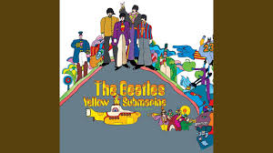

All you need is love
All you need is love Love, love, love Love, love, love Love, love, love There's nothin' you can do that can't be done Nothin' you can sing that can't be sung Nothin' you can say, but you can learn how to play the game It's easy Nothin' you can make that can't be made No one you can save that can't be saved Nothin' you can do, but you can learn how to be you in time It's easy All you need is love All you need is love All you need is love, love Love is all you need All you need is love All you need is love All you need is love, love Love is all you need There's nothin' you can know that isn't known Nothin' you can see that isn't shown There's nowhere you can be that isn't where you're meant to be It's easy All you need is love All you need is love All you need is love, love Love is all you need All you need is love (all together now) All you need is love (everybody) All you need is love, love Love is all you need Love is all you need (love is all you need) Love is all you need (love is all you need) Love is all you need (love is all you need) Love is all you need (love is all you need) Love is all you need (love is all you need) Love is all you need (love is all you need) Love is all you need (love is all you need) Love is all you need (love is all you need) Love is all you need (love is all you need) Love is all you need (love is all you need) Love is all you need (love is all you need) Yee-hay (love is all you need) (Love is all you need) (Love is all you need) Yesterday (Love is all you need) Oh Love is all you need Love is all you need (oh yeah) Love is all you need (She loves you, yeah, yeah, yeah) (She loves you, yeah, yeah, yeah) (Love is all you need) (Love is all you need) (Love is all you need) (Love is all you need) (Love is all you need) (Love is all you need) Fonte: LyricFind Compositores: John Lennon / Paul McCartney